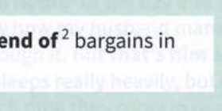
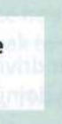

52
No
A
Các cách diễn đạt giao tiếp sử dụng no
Tôi sẽ về nhà trong next to no time1 (nháy mắt thôi).
Đi rửa tay đi. No ifs and buts8 (Không có nhưng nhị gì hết).
Tôi đã tìm thấy no end of2 (vô số) món hời trong đợt giảm giá.

Tôi sẽ giúp bạn. No strings attached9 (Không ràng buộc gì cả), tôi hứa đấy.
Sẽ giúp ích cho tôi no end3 (rất nhiều) nếu bạn đi mua sắm giúp.
Đừng tin vào những lời hứa của họ. No such thing as a free lunch10 (Không có bữa ăn nào là miễn phí cả).
Cô ấy tiêu tiền như thể there was no tomorrow4 (không có ngày mai).

Một số khu vực trong thành phố là no-go areas11 (những khu vực nguy hiểm cấm vào) vào ban đêm.
Bạn nhất định phải đến bữa tiệc của tôi. Tôi won't take no for an answer5 (sẽ không chấp nhận lời từ chối đâu).
Anh ấy không gọi điện hay gửi email, nhưng no news is good news12 (không có tin tức gì là tin tốt).
No prizes for guessing6 (Không cần đoán cũng biết) ai là người đến cuối cùng.
Cô ấy đã nói với tôi in no uncertain terms13 (một cách thẳng thắn và dứt khoát) rằng cô ấy nghĩ tôi đang phạm phải một sai lầm ngớ ngẩn.
Hãy hỏi cô ấy bây giờ đi. No time like the present7 (Không có thời điểm nào tốt hơn hiện tại).
1 rất nhanh chóng
2 rất nhiều
3 rất nhiều
4 nhanh chóng
5 không cho phép bạn từ chối tham gia
6 điều đó thật hiển nhiên
7 bây giờ là thời điểm hoàn hảo
8 làm ngay không cãi cọ (thường dùng với trẻ con)
9 sẽ không có những yêu cầu phiền toái hoặc khó chịu đi kèm
10 nếu ai đó cho bạn cái gì, họ luôn mong đợi nhận lại điều gì đó
11 những nơi nguy hiểm
12 chúng ta sẽ nghe được tin nếu có vấn đề xảy ra
13 một cách mạnh mẽ và thẳng thắn
B
Sử dụng no để tăng hiệu quả diễn đạt
Lưu ý các thành ngữ này với no. Trong mỗi thành ngữ, cụm từ này được dùng để thay thế cho một từ hoặc cách diễn đạt trực tiếp hơn. Ví dụ, Rome is no ordinary city thực chất có nghĩa là Rome is an extraordinary city (Rome không phải là một thành phố bình thường [tức là một thành phố phi thường]).
| thành ngữ | ví dụ | nghĩa |
|---|---|---|
| be no oil painting (không đẹp cho lắm) | Lottie is a beautiful woman, but her daughter is no oil painting. (Lottie là một phụ nữ xinh đẹp, nhưng con gái cô ấy thì không được đẹp cho lắm [no oil painting].) | không đẹp / không xinh xắn |
| be no spring chicken (không còn trẻ trung gì nữa) | She loves windsurfing and paragliding, even though she's no spring chicken. (Bà ấy thích lướt ván buồm và nhảy dù lượn, dù không còn trẻ trung gì nữa [no spring chicken].) | không còn trẻ nữa |
| be no/nobody's fool (khôn ngoan, không dễ bị lừa) | He'll never believe your lies - he's no/nobody's fool. (Anh ta sẽ không bao giờ tin những lời nói dối của bạn đâu - anh ta không phải là kẻ khờ dễ bị lừa [no/nobody's fool] đâu.) | khôn ngoan và không dễ bị lừa gạt |
| be no joke (không phải chuyện đùa) | It's no joke driving on those steep, narrow mountain roads. (Lái xe trên những con đường núi dốc và hẹp đó không phải chuyện đùa đâu [no joke].) | nghiêm trọng hoặc khó khăn |
| be no picnic (không hề dễ dàng / không dễ chịu gì) | Trekking across the desert in temperatures of over 40 degrees was no picnic for the explorers. (Hành trình đi bộ băng qua sa mạc dưới cái nóng trên 40 độ không hề dễ chịu chút nào [no picnic] đối với các nhà thám hiểm.) | khó khăn và không dễ chịu chút nào |